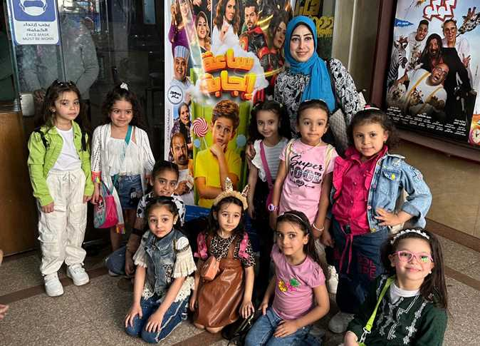

رحلات جماعيه قبل الامتحان بمشاهده فيلم ساعه اجابة
فيلم «ساعة إجابة» يقدم قصة في إطار كوميدي طريف مع لمحة فانتازية، أخذنا إليها خيال الطفل ياسين (سليم مصطفى)، وشارك فيها عدد كبير من النجوم الذين تجمعوا لأول مرة في توليفة سينمائية فريدة، وعلى رأسهم النجمة سوسن بدر ومعها غادة عادل، شريف سلامة، آيتن عامر، نجلاء بدر، انتصار، محمد ثروت، بدرية طلبة، إيمان السيد، أحمد فتحي، فيدرا، فراس سعيد، مراد مكرم، أحمد طلعت، لطيفة فهمي، مجدي البحيري، بالإضافة إلى المغني الشعبي عمر كمال الذي يشارك في الفيلم بالغناء أيضاً.